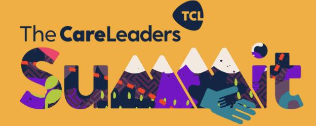
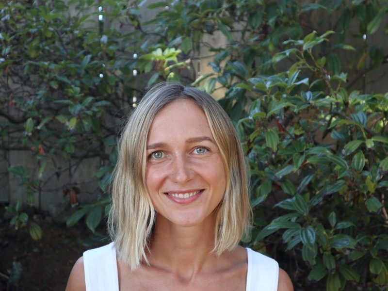
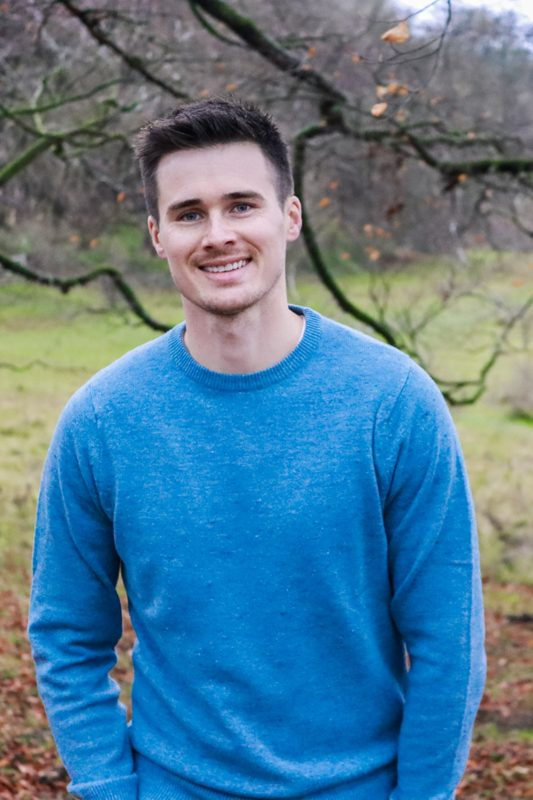
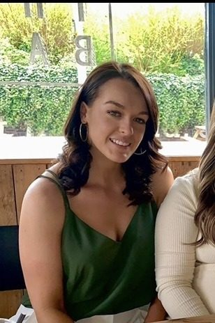
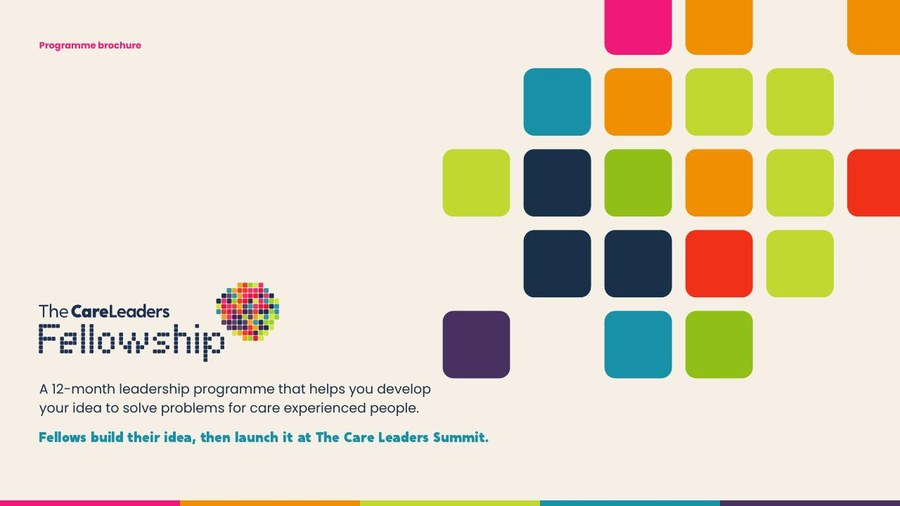

A 12-month leadership programmeDevelop your idea to solve problems for care-experienced people.
For anyone over 18 with an idea, project or business that solves a problem for care-experienced people. You grow as a leader while you develop your idea, then launch it at The Care Leaders Summit, in front of councils from across the country.
The Fellowship, in short
What we offer, what we do, what you get and what it is for.
The offer
A 12-month leadership programme for people building something that solves problems for care-experienced people. A new cohort starts each year.
What we do
Two four-day retreats, a two-hour online session every month, and the Five S leadership framework, worked through with a cohort of lived and professional leaders.
What you get
Your project or business launched at The Care Leaders Summit, introductions to councils from across the country, and a network of people doing the same thing.
What it achieves
More good ideas for care-experienced people turned into projects and businesses that last.
Fellows arrive with an idea and leave having launched it.
Plenty of good ideas for care-experienced people never get past the first year. The Fellowship gives the people behind them a year, the structure and the people around them: two retreats, a monthly session and a framework that takes an idea from the story behind it, through its launch at The Care Leaders Summit, to who will lead it next.
At a glance
A 12-month programme for people building something for care-experienced people, with lived and professional experience in the same room.
- Who can applyAnyone over 18 with an idea that solves problems for care-experienced people, whether or not you are care-experienced yourself. No upper age limit
- What you needAn idea, project or business that solves problems for care-experienced people. It doesn’t need to be polished
- How long12 months, with a new cohort each year
- TimeAbout four hours a month
- RetreatsTwo four-day retreats, in month 1 and month 7
- OnlineA two-hour session every month
- How it endsYou launch your work at The Care Leaders Summit
- Run byThe Care Leaders Fellowship CIC
The Five S leadership framework
The Fellowship follows the Five S framework as its curriculum. The retreats and monthly sessions take you through the five stages in order, from the story behind your idea, through its launch at the Summit, to who will lead it next. Choose any S to see what fellows work on.
Storytelling
How to tell the story of your idea, and your own story if you choose to, so funders, partners and the people you want to reach understand why it matters.
You work on
- The story behind your idea
- Who it is for and what changes for them
- Telling it in a pitch, a post or a meeting
Skills
The entrepreneurial and leadership skills to move an idea forward, and an honest look at the skills you have and the ones you need to find.
You work on
- Your strengths as a leader
- The gaps, and who could fill them
- Leading other people
Strategies
Turning an idea into a plan: who it is for, how it will reach them, and how it will be paid for.
You work on
- Your plan for the next year
- How the idea is funded
- Partners who can help
- Planning your launch at the Summit
Scaling or sustaining
You launch your work at The Care Leaders Summit. From there, you decide whether to grow it or keep it running well where it is.
You work on
- Launching at the Summit
- Choosing your route
- What growing or keeping it going would need
Succession planning
Planning for the work to carry on without depending on one person, including you.
You work on
- Who could lead it next
- Writing down how it works
- A plan for handing on
Your year
Twelve months, from first idea to launch. A new cohort starts each year.
- 1
Apply
Tell us about you and the idea you want to work on. We meet every applicant, then confirm places.
- Your idea doesn’t need to be polished
- 2
Retreat one
Month 1. Four days to meet your cohort and start the Five S framework.
- 3
Every month
A two-hour online session with your cohort.
- About four hours a month in total
- Work on your idea between sessions
- 4
Retreat two
Month 7. Four days to take the work further and plan your launch.
- Pitch training
- Planning your launch at the Summit
- 5
The Summit
End of the year. Launch your work at The Care Leaders Summit, to councils from across the country.
The support around you
A cohort
Fellows working on the same kind of problem, who meet at every retreat and session and keep in touch in between.
The learning programme
The Five S framework, taught at the two retreats and the monthly online sessions.
Entrepreneurial coaching
Coaching to move your idea from a plan to something ready to launch.
Digital marketing incubator
Help to create your own content, from blogs, video and podcasts to social media and a website.
Fundraising support
Pitch training, and help to find funders and make the case to them.
A launch at the Summit
A place at The Care Leaders Summit to present your work to councils from across the country.

At the end of the Fellowship, you launch your work at The Care Leaders Summit.
We plan and host the Summit. We bring councils from across the country into the room to meet you, hear your idea and talk about what could happen next. Conversations there can lead to partnerships, pilots in a council area, or work being commissioned.
Former fellows
Fellows come from care, from social work, from youth work and from business. Here are a few of them, and what they built.

Mary-Anne Hodd
Training, keynotes and consultancy that change how adults understand children in care. Launched with the Fellowship’s support.

Carl Moreton
Peer mentoring and workshops for children with care experience in Buckinghamshire, now delivered under contract.
Jerome Harvey-Agyei
Reducing loneliness for care leavers, and training for the people who support them.
Jade Barnett
Co-founder, speaker and consultant working to improve outcomes for care leavers.

Beth Bradshaw
Built House of Participation from an idea into a business, with the Fellowship’s advice and guidance.
“The Fellowship supported me from my initial ideas phase through to launching; they’ve been critical in the success of my business.”
Mary-Anne Hodd, CEO, Vital Voice Ltd. Fellow, 2023
Previous work
Fellows led sessions at The Care Leaders Summit.

Questions people ask
Who can apply?
Anyone over 18 with an idea, project or business that solves problems for care-experienced people. You don’t need to be care-experienced yourself, and there is no upper age limit.
Does my idea need to be developed?
No. Your idea doesn’t need to be polished.
How much time does it take?
About four hours a month, plus two four-day retreats.
When does it start?
A new cohort starts each year. Get in touch to find out when we are opening applications.
Who runs it?
The Care Leaders Fellowship CIC.
Can my employer support me to take part?
Yes. We can share an agreement with your employer that sets out the time you need for the retreats.
What happens after the year?
Fellows stay part of the Fellowship network, and keep working on the conversations started at the Summit.
Download the Fellowship brochure
Everything in one place: how the year works, the Five S framework, the support around you and the launch at The Care Leaders Summit.
Thank you. Your brochure is downloading.
If it didn’t start, open the brochure here.

Your idea could be launching at the next Summit.
Leave your details below and we’ll tell you when applications open, or send us a question and we’ll reply within 3 working days.